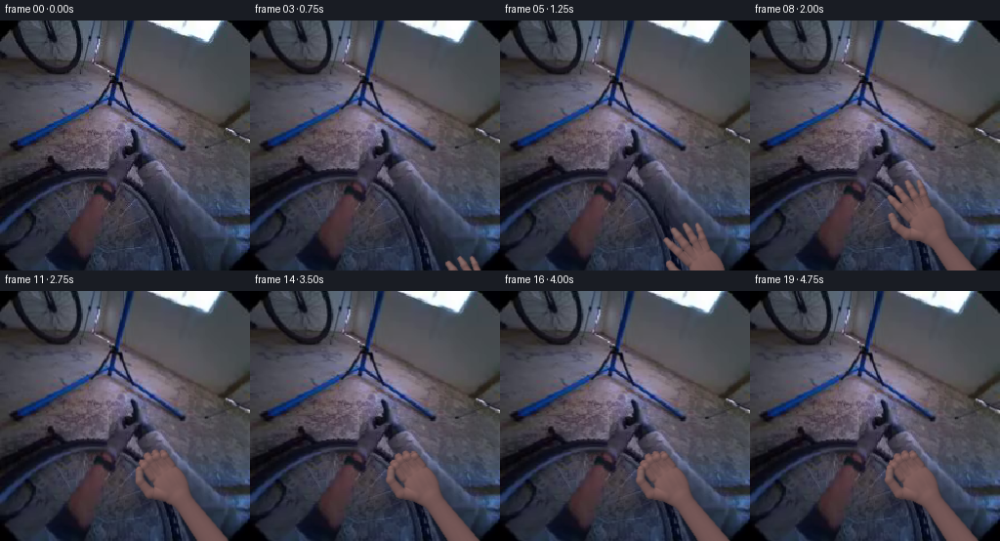
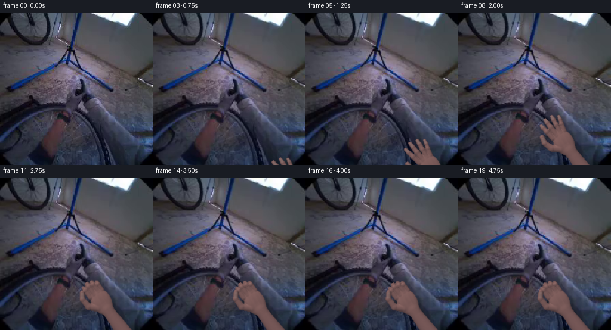
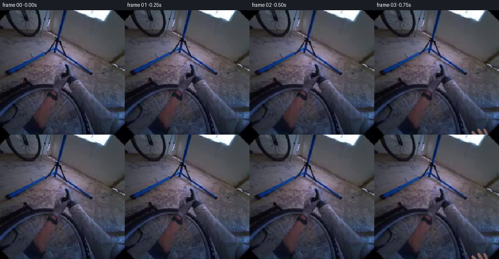

CODING AGENTS AS PIXEL WORLD MODELS
traex/GPT-6.1-Sol · common50_0023
点击播放 · 原生 RGB 像素
逐轮保存的候选
回放视频、检查图与代码变化。
每份候选均可单独播放。实际图片检查记录在下方工具轨迹中。
候选 01播放与检查图
点击播放 · 原生 RGB 像素

展开代码变化
--- 上一保存版本
+++ 本次保存版本
@@ -0,0 +1,229 @@
+"""Local mathematical RGB animation of an egocentric wheel grasp.
+No learned models or external imagery. A soft anatomical surface is
+ray sampled and lit over the supplied photograph.
+"""
+from pathlib import Path
+import numpy as np
+from PIL import Image
+from scipy.ndimage import gaussian_filter, map_coordinates
+import cv2
+import artifact_io
+
+ROOT = Path(__file__).resolve().parent
+SOURCE = np.asarray(Image.open(ROOT / 'first_frame.png').convert('RGB'))
+H, W = SOURCE.shape[:2]
+
+
+def ease(t):
+ t = np.clip(t, 0., 1.)
+ return t*t*(3-2*t)
+
+
+def smin(a, b, k):
+ h = np.maximum(k - np.abs(a-b), 0.) / k
+ return np.minimum(a, b) - h*h*k*.25
+
+
+def ellipsoid(x, y, z, c, r):
+ qx, qy, qz = x-c[0], y-c[1], z-c[2]
+ k0 = np.sqrt((qx/r[0])**2+(qy/r[1])**2+(qz/r[2])**2+1e-9)
+ k1 = np.sqrt((qx/(r[0]*r[0]))**2+(qy/(r[1]*r[1]))**2+(qz/(r[2]*r[2]))**2+1e-9)
+ return k0*(k0-1.)/k1
+
+
+def capsule(x, y, z, a, b, ra, rb, flat=1.):
+ vx, vy, vz = b-a
+ vz /= flat
+ qx, qy, qz = x-a[0], y-a[1], (z-a[2])/flat
+ t = np.clip((qx*vx+qy*vy+qz*vz)/(vx*vx+vy*vy+vz*vz+1e-8),0,1)
+ return np.sqrt((qx-vx*t)**2+(qy-vy*t)**2+(qz-vz*t)**2+1e-8) - (ra+(rb-ra)*t)
+
+
+def geometry(close):
+ """Right hand, dorsal side. Units are approximately screen pixels."""
+ bases = [-11.7, -3.8, 4.3, 11.0]
+ lengths = [31.5, 35.0, 32.0, 25.5]
+ widths = [4.0, 4.25, 3.9, 3.35]
+ items = []
+ bones = []
+ for i,(x,L,r) in enumerate(zip(bases,lengths,widths)):
+ base=np.array([x,15.0-abs(x)*.08, .6])
+ # Finger abduction in the approaching, open hand.
+ spread = [-5.7,-1.6,2.9,6.4][i]
+ opened = np.array([base,
+ [x+spread*.48,base[1]+L*.47,1.4],
+ [x+spread*.83,base[1]+L*.77,0.5],
+ [x+spread,base[1]+L,-1.0]],dtype=np.float32)
+ # Distal phalanges wrap behind the spoke as the hand closes.
+ closed = np.array([base,
+ [x-.5,base[1]+L*.46, 2.0+i*.2],
+ [x-.3,base[1]+L*.57,-5.8-i*.5],
+ [x+.7,base[1]+L*.29,-12.0-i*.4]],dtype=np.float32)
+ c=float(ease((close-.05*i)/(1-.05*i)))
+ p=opened*(1-c)+closed*c
+ rad=[r*1.08,r,r*.86,r*.71]
+ for j in range(3):
+ items.append((p[j],p[j+1],rad[j],rad[j+1],.94))
+ bones.append((p[j],p[j+1],rad[j],rad[j+1],i,j))
+ thumb_open = np.array([[-11,-8,0],[-23,1,1],[-29,13,2],[-29,24,2]],dtype=np.float32)
+ thumb_shut = np.array([[-11,-8,0],[-23,3,2],[-24,20,5],[-17.0,29.0,5.2]],dtype=np.float32)
+ p=thumb_open*(1-close)+thumb_shut*close
+ for j in range(3):
+ rad=[6.2,5.4,4.3,3.8]
+ items.append((p[j],p[j+1],rad[j],rad[j+1],.94))
+ bones.append((p[j],p[j+1],rad[j],rad[j+1],4,j))
+ return items,bones
+
+
+def field(x,y,z,items):
+ d=ellipsoid(x,y,z,(0,-1,0),(16.2,23,6.3))
+ d=smin(d,ellipsoid(x,y,z,(0,-17,-.7),(10.2,12,6.0)),4.)
+ d=smin(d,ellipsoid(x,y,z,(-8,-4,-.6),(8.5,16,6.1)),3.)
+ d=smin(d,capsule(x,y,z,np.array([.0,-19,-1]),np.array([4,-110,-2]),9.5,15.5,.76),4.)
+ for a,b,ra,rb,flat in items:
+ d=smin(d,capsule(x,y,z,a,b,ra,rb,flat),1.6)
+ return d
+
+
+# A high-pass texture derived solely from pixels in the source's warm region.
+patch=SOURCE[183:222,76:111].astype(np.float32)
+patch=(patch-patch.mean(axis=(0,1),keepdims=True))
+patch=patch-gaussian_filter(patch,(1.25,1.25,0))
+patch=np.clip(patch,-7,7)
+
+
+def render_hand(center, angle, close, contact):
+ forward=np.array([-np.sin(angle),-np.cos(angle)],dtype=np.float32)
+ side=np.array([np.cos(angle),-np.sin(angle)],dtype=np.float32)
+ items,bones=geometry(close)
+ yy,xx=np.mgrid[0:H,0:W].astype(np.float32)
+ sx,sy=xx-center[0],yy-center[1]
+ lx=sx*side[0]+sy*side[1]
+ ly=sx*forward[0]+sy*forward[1]
+ bound=(lx>-42)&(lx<29)&(ly>-120)&(ly<60)
+ inds=np.flatnonzero(bound)
+ X=lx.ravel()[inds];Y=ly.ravel()[inds]
+ # The small dorsal inclination makes the knuckles nearest to the viewer.
+ tilt=.11*Y-.06*X
+ Z=np.full(len(inds),31.,np.float32)
+ alive=np.ones(len(inds),bool)
+ hit=np.zeros(len(inds),bool)
+ for step in range(105):
+ act=np.flatnonzero(alive)
+ if not len(act):break
+ d=field(X[act],Y[act],Z[act]-tilt[act],items)
+ yes=d<.105
+ hit[act[yes]]=True
+ alive[act[yes]]=False
+ walk=act[~yes]
+ Z[walk]-=np.maximum(d[~yes]*.77,.09)
+ alive[Z < -36]=False
+ ids=inds[hit]
+ X=X[hit];Y=Y[hit];Z=Z[hit]-tilt[hit]
+ mask=np.zeros((H,W),np.float32);mask.ravel()[ids]=1
+ if not len(ids):return np.zeros_like(SOURCE,dtype=np.float32),mask
+ ep=.23
+ dx=field(X+ep,Y,Z,items)-field(X-ep,Y,Z,items)
+ dy=field(X,Y+ep,Z,items)-field(X,Y-ep,Z,items)
+ dz=field(X,Y,Z+ep,items)-field(X,Y,Z-ep,items)
+ normal=np.stack([dx-.06*dz,dy-.11*dz,dz],1)
+ normal/=np.maximum(np.linalg.norm(normal,axis=1,keepdims=True),1e-6)
+ # Convert the local normal back to the photograph's coordinates.
+ normx=normal[:,0]*side[0]+normal[:,1]*forward[0]
+ normy=normal[:,0]*side[1]+normal[:,1]*forward[1]
+ nz=normal[:,2]
+ illumination=np.maximum(-.39*normx-.52*normy+.76*nz,0)
+ reflect=np.maximum(-.24*normx-.32*normy+.916*nz,0)
+ color=np.empty((len(ids),3),np.float32)
+ # Warm diffuse response in the same subdued exposure as the source.
+ albedo=np.array([146.,102.,91.])
+ color[:]=albedo[None,:]*(.47+.43*illumination[:,None])
+ color+=np.array([7,10,17],dtype=np.float32)
+ color+=np.array([21,20,18])[None,:]*(reflect[:,None]**22)*.25
+ tex=map_coordinates(patch[:,:,0],[np.mod(Y*1.08+17,patch.shape[0]-1),np.mod(X*1.05+28,patch.shape[1]-1)],order=1,mode='wrap')
+ grain=.38*np.sin(X*7.9+Y*10.2)+.25*np.sin(X*13.6-Y*5.1)
+ color+=(tex*.20+grain)[:,None]*np.array([1,.72,.61])[None,:]
+ # Tiny, soft longitudinal tendons on the dorsum, not painted outlines.
+ tendon=np.zeros(len(ids),np.float32)
+ for xp in [-11,-3,5,11]:
+ tendon+=np.exp(-((X-(xp+.09*Y))/1.5)**2)
+ region=ease((Y+14)/6)*(1-ease((Y-13)/6))*(nz>.6)
+ color+=(tendon*region)[:,None]*np.array([2.1,1.3,1.1])
+ # Fine joint folds and individually shaped nail beds on visible distal bones.
+ P=np.stack([X,Y,Z],1)
+ crease=np.zeros(len(ids),np.float32)
+ nail=np.zeros(len(ids),np.float32)
+ nail_tip=np.zeros(len(ids),np.float32)
+ for a,b,ra,rb,fi,ji in bones:
+ v=b-a;length=float(np.linalg.norm(v));u=v/length
+ qp=P-a
+ axial=qp@u
+ t=np.clip(axial/length,0,1)
+ radial=qp-t[:,None]*v
+ dist=np.linalg.norm(radial,axis=1)
+ surf=(np.abs(dist-(ra+(rb-ra)*t))<1.1)
+ if ji<2:
+ # Dorsal joint wrinkles are broad and shallow with two tiny folds.
+ c=(np.exp(-((axial-length*.83)/.29)**2)+.4*np.exp(-((axial-length*.92)/.21)**2))
+ crease=np.maximum(crease,c*surf*(nz>.3))
+ if ji==2:
+ across=np.array([1.,0.,0.]); across-=u*(across@u);across/=np.linalg.norm(across)
+ dorsal=np.cross(across,u)
+ # Nail follows the phalanx, disappearing naturally as it curls away.
+ ctr=a+v*.55+dorsal*((ra+rb)*.49)
+ dp=P-ctr
+ along=dp@u; cross=dp@across; dep=dp@dorsal
+ q=(along/(length*.35+1.2))**4+(cross/(rb*.76))**4
+ n=np.clip((1-q)*4,0,1)*np.clip(1-np.abs(dep)/1.6,0,1)*surf
+ nail=np.maximum(nail,n)
+ nail_tip=np.maximum(nail_tip,n*ease((along-length*.15)/.7))
+ color-=crease[:,None]*np.array([10.,7.,6.])
+ nail_color=np.array([140.,112.,105.])[None,:]*(.59+.34*illumination[:,None])+np.array([5.,7.,11.])
+ color=color*(1-nail[:,None]*.8)+nail_color*nail[:,None]*.8
+ color+=nail_tip[:,None]*np.array([8,7,6])
+ # A slightly darker wrist with restrained dorsal veins.
+ wrist=ease((-Y-17)/18)
+ color-=wrist[:,None]*np.array([4,3,2])
+ result=np.zeros((H,W,3),np.float32)
+ result.reshape(-1,3)[ids]=color
+ # Anti-alias the silhouette without blurring skin detail.
+ soft=gaussian_filter(mask,.43)
+ blurred=gaussian_filter(result,(.43,.43,0))
+ softcolor=blurred/np.maximum(soft[:,:,None],1e-5)
+ result=np.where(mask[:,:,None]>0,result,softcolor)
+ return result,soft
+
+
+def make_frames():
+ frames=[SOURCE.copy()]
+ for i in range(1,20):
+ reach=ease((i-.1)/9.8)
+ closing=ease((i-5.5)/7.5)
+ center=np.array([257.,311.])*(1-reach)+np.array([174.,196.])*reach
+ # The fingers lead; the forearm follows and comes to rest in the grip.
+ center[0]-=5*np.sin(np.pi*reach)
+ center[1]-=2*np.sin(np.pi*reach)
+ settled=ease((i-12)/3)
+ center+=settled*np.array([.55*np.sin((i-12)*.65),.45*np.sin((i-12)*.56)])
+ angle=np.deg2rad(34+3*(1-reach)+.4*settled*np.sin(i*.48))
+ hand,alpha=render_hand(center,angle,closing,reach)
+ bg=SOURCE.astype(np.float32)
+ # Soft cast shadow lies on the wheel and pavement under the reaching hand.
+ shade=gaussian_filter(alpha,2.5)
+ shade=cv2.warpAffine(shade,np.array([[1,0,1.5],[0,1,2.]],np.float32),(W,H))
+ bg*=1-(shade*.14*reach)[:,:,None]
+ frame=bg*(1-alpha[:,:,None])+hand*alpha[:,:,None]
+ # Small coherent egocentric drift; the held rim and hand stay registered.
+ drift=ease(i/5)
+ tx=.37*np.sin(i*.52)*drift
+ ty=.30*np.sin(i*.42)*drift
+ frame=cv2.warpAffine(frame,np.array([[1,0,tx],[0,1,ty]],np.float32),(W,H),flags=cv2.INTER_LINEAR,borderMode=cv2.BORDER_REFLECT_101)
+ frames.append(np.clip(np.rint(frame),0,255).astype(np.uint8))
+ return np.stack(frames)
+
+
+if __name__=='__main__':
+ frames=make_frames()
+ assert np.array_equal(frames[0],SOURCE)
+ np.save(ROOT/'candidate_rgb.npy',frames)
+ artifact_io.save(frames,ROOT)
候选 02播放与检查图
点击播放 · 原生 RGB 像素


展开代码变化
--- 上一保存版本
+++ 本次保存版本
@@ -199,7 +199,7 @@
for i in range(1,20):
reach=ease((i-.1)/9.8)
closing=ease((i-5.5)/7.5)
- center=np.array([257.,311.])*(1-reach)+np.array([174.,196.])*reach
+ center=np.array([257.,311.])*(1-reach)+np.array([169.,206.])*reach
# The fingers lead; the forearm follows and comes to rest in the grip.
center[0]-=5*np.sin(np.pi*reach)
center[1]-=2*np.sin(np.pi*reach)
可观测工具轨迹
实际执行的命令与返回图片。
命令 1exit 0
/bin/bash -lc "ls -la && cat prompt.txt && printf '\\n---RULES---\\n' && cat GENERATION_RULES.md"
命令 2exit 0
/bin/bash -lc "cat task_spec.json && cat artifact_io.py && python - <<'PY'
from PIL import Image
import numpy as np
im=np.array(Image.open('first_frame.png'))
print(im.shape)
# 64 x64 numerical color/class map
im=im[:,:,:3]
a=np.asarray(Image.fromarray(im).resize((64,64)))
for row in a:
s=''
for r,g,b in row.astype(int):
lum=(int(r)+int(g)+int(b))/3
if r>g*1.15 and r>b*1.3 and r>75: c='S' if r>140 else 's'
elif b>r*1.2 and b>g*1.05:c='B'
elif g>r*1.2 and g>b*1.05:c='G'
elif lum<35:c='@'
elif lum<65:c='#'
elif lum<105:c='o'
elif lum<150:c=':'
elif lum<190:c='.'
else:c=' '
s+=c
print(s)
PY"命令 3exit 0
/bin/bash -lc "python - <<'PY'
from PIL import Image
import numpy as np
im=np.array(Image.open('first_frame.png'))
# dominant bins
q=(im//16).reshape(-1,3)
u,c=np.unique(q,axis=0,return_counts=True)
for i in np.argsort(c)[-25:][::-1]:
m=(q==u[i]).all(1).reshape(256,256);y,x=np.where(m)
print(u[i]*16,c[i], 'bounds', (x.min(),y.min(),x.max(),y.max()), 'center',tuple(np.round([x.mean(),y.mean()],1)))
print('pixels at grid')
for y in range(8,256,16):
print(y, ' '.join('%3d,%3d,%3d'%tuple(im[y,x]) for x in range(8,256,16)))
# luminance ascii at 100x100
im=Image.open('first_frame.png').convert('L').resize((100,100))
a=np.array(im);chars='@%#*+=-:. '
for row in a: print(''.join(chars[min(9,v*10//256)] for v in row.astype(int)))
PY"命令 4exit 0
/bin/bash -lc "python - <<'PY'
from PIL import Image
import numpy as np
im=np.array(Image.open('first_frame.png')).astype(float)
a=np.array(Image.fromarray(im.astype('uint8')).resize((96,96))).astype(float)
print('red - blue map: W>=10 w>=0 .>=-10 :=>=-20, o>=-35 @ rest')
for row in a:
print(''.join('W' if r-b>10 else 'w' if r-b>0 else '.' if r-b>-10 else ':' if r-b>-20 else 'o' if r-b>-35 else '@' for r,g,b in row))
print('R-G map (W>20 S>10 s>5 -=0 .=-5 o=-10 @rest)')
for row in a:
print(''.join('W' if r-g>20 else 'S' if r-g>10 else 's' if r-g>5 else '-' if r-g>0 else '.' if r-g>-5 else 'o' if r-g>-10 else '@' for r,g,b in row))
PY"命令 5exit 0
/bin/bash -lc "python - <<'PY'
from PIL import Image
import numpy as np
im=np.array(Image.open('first_frame.png')); chars='@%#*+=-:. '
for name, box in [('lower brown',(55,155,125,250)),('center wheel',(70,55,170,175)),('whole right',(130,95,235,255))]:
a=im[box[1]:box[3],box[0]:box[2]].mean(2)
print('\\n',name,box)
for y in range(0,len(a),2):
print('%03d'% (box[1]+y), ''.join(chars[min(9,int(v)*10//256)] for v in a[y]))
# line segmentation rows
for y in [50,70,80,90,100,110,120,130,140,150,160,180,200,220]:
print('\\n',y)
a=im[y]
print(' '.join(f'{x}:{a[x].tolist()}' for x in range(80,181,5)))
PY"命令 6exit 0
/bin/bash -lc "python - <<'PY'
import importlib.util
for m in ['numpy','PIL','scipy','cv2']:
print(m, bool(importlib.util.find_spec(m)))
from PIL import Image
import numpy as np
im=np.array(Image.open('first_frame.png'))
# dark /chromatic structural map central: by luminance and blue bias
print('structural map (downsample2): H blue bicycle; black @; grey pavement .; tan s')
a=np.asarray(Image.fromarray(im).resize((128,128))).astype(int)
for row in a:
print(''.join('@' if (r+g+b)<80 else 'H' if b-r>40 else 'h' if b-r>28 else 'S' if r-g>22 else 's' if r-g>11 else ':' if (r+g+b)<155 else '.' if (r+g+b)<280 else '-' if (r+g+b)<430 else ' ' for r,g,b in row))
PY"命令 7exit 0
/bin/bash -lc "python - <<'PY'
import numpy as np
from PIL import Image
from scipy.ndimage import label
im=np.array(Image.open('first_frame.png')).astype(float);r,g,b=im.transpose(2,0,1)
m=(r-g>15)&(r-b>5)&(np.indices(r.shape)[0]>155)
l,n=label(m)
for i in range(1,n+1):
y,x=np.where(l==i)
if len(x)>15: print(len(x), [x.min(),y.min(),x.max(),y.max()])
# rows of warm object using text with rgb mapped brightness on reds and greys
for y in range(165,246,2):
s=''
for x in range(65,126):
R,G,B=im[y,x]
if R-G>22:s+='R'
elif R-G>14:s+='r'
elif R-G>7:s+='t'
elif (R+G+B)<70:s+='@'
elif (R+G+B)<130:s+='#'
elif (R+G+B)<180:s+='o'
elif (R+G+B)<240:s+='.'
else:s+=' '
print(y,s)
PY"命令 8exit 0
/bin/bash -lc "cat > generate.py <<'PY'
\"\"\"Local mathematical RGB animation of an egocentric wheel grasp.
No learned models or external imagery. A soft anatomical surface is
ray sampled and lit over the supplied photograph.
\"\"\"
from pathlib import Path
import numpy as np
from PIL import Image
from scipy.ndimage import gaussian_filter, map_coordinates
import cv2
import artifact_io
ROOT = Path(__file__).resolve().parent
SOURCE = np.asarray(Image.open(ROOT / 'first_frame.png').convert('RGB'))
H, W = SOURCE.shape[:2]
def ease(t):
t = np.clip(t, 0., 1.)
return t*t*(3-2*t)
def smin(a, b, k):
h = np.maximum(k - np.abs(a-b), 0.) / k
return np.minimum(a, b) - h*h*k*.25
def ellipsoid(x, y, z, c, r):
qx, qy, qz = x-c[0], y-c[1], z-c[2]
k0 = np.sqrt((qx/r[0])**2+(qy/r[1])**2+(qz/r[2])**2+1e-9)
k1 = np.sqrt((qx/(r[0]*r[0]))**2+(qy/(r[1]*r[1]))**2+(qz/(r[2]*r[2]))**2+1e-9)
return k0*(k0-1.)/k1
def capsule(x, y, z, a, b, ra, rb, flat=1.):
vx, vy, vz = b-a
vz /= flat
qx, qy, qz = x-a[0], y-a[1], (z-a[2])/flat
t = np.clip((qx*vx+qy*vy+qz*vz)/(vx*vx+vy*vy+vz*vz+1e-8),0,1)
return np.sqrt((qx-vx*t)**2+(qy-vy*t)**2+(qz-vz*t)**2+1e-8) - (ra+(rb-ra)*t)
def geometry(close):
\"\"\"Right hand, dorsal side. Units are approximately screen pixels.\"\"\"
bases = [-11.7, -3.8, 4.3, 11.0]
lengths = [31.5, 35.0, 32.0, 25.5]
widths = [4.0, 4.25, 3.9, 3.35]
items = []
bones = []
for i,(x,L,r) in enumerate(zip(bases,lengths,widths)):
base=np.array([x,15.0-abs(x)*.08, .6])
# Finger abduction in the approaching, open hand.
spread = [-5.7,-1.6,2.9,6.4][i]
opened = np.array([base,
[x+spread*.48,base[1]+L*.47,1.4],
[x+spread*.83,base[1]+L*.77,0.5],
[x+spread,base[1]+L,-1.0]],dtype=np.float32)
# Distal phalanges wrap behind the spoke as the hand closes.
closed = np.array([base,
[x-.5,base[1]+L*.46, 2.0+i*.2],
[x-.3,base[1]+L*.57,-5.8-i*.5],
[x+.7,base[1]+L*.29,-12.0-i*.4]],dtype=np.float32)
c=float(ease((close-.05*i)/(1-.05*i)))
p=opened*(1-c)+closed*c
rad=[r*1.08,r,r*.86,r*.71]
for j in range(3):
items.append((p[j],p[j+1],rad[j],rad[j+1],.94))
bones.append((p[j],p[j+1],rad[j],rad[j+1],i,j))
thumb_open = np.array([[-11,-8,0],[-23,1,1],[-29,13,2],[-29,24,2]],dtype=np.float32)
thumb_shut = np.array([[-11,-8,0],[-23,3,2],[-24,20,5],[-17.0,29.0,5.2]],dtype=np.float32)
p=thumb_open*(1-close)+thumb_shut*close
for j in range(3):
rad=[6.2,5.4,4.3,3.8]
items.append((p[j],p[j+1],rad[j],rad[j+1],.94))
bones.append((p[j],p[j+1],rad[j],rad[j+1],4,j))
return items,bones
def field(x,y,z,items):
d=ellipsoid(x,y,z,(0,-1,0),(16.2,23,6.3))
d=smin(d,ellipsoid(x,y,z,(0,-17,-.7),(10.2,12,6.0)),4.)
d=smin(d,ellipsoid(x,y,z,(-8,-4,-.6),(8.5,16,6.1)),3.)
d=smin(d,capsule(x,y,z,np.array([.0,-19,-1]),np.array([4,-110,-2]),9.5,15.5,.76),4.)
for a,b,ra,rb,flat in items:
d=smin(d,capsule(x,y,z,a,b,ra,rb,flat),1.6)
return d
# A high-pass texture derived solely from pixels in the source's warm region.
patch=SOURCE[183:222,76:111].astype(np.float32)
patch=(patch-patch.mean(axis=(0,1),keepdims=True))
patch=patch-gaussian_filter(patch,(1.25,1.25,0))
patch=np.clip(patch,-7,7)
def render_hand(center, angle, close, contact):
forward=np.array([-np.sin(angle),-np.cos(angle)],dtype=np.float32)
side=np.array([np.cos(angle),-np.sin(angle)],dtype=np.float32)
items,bones=geometry(close)
yy,xx=np.mgrid[0:H,0:W].astype(np.float32)
sx,sy=xx-center[0],yy-center[1]
lx=sx*side[0]+sy*side[1]
ly=sx*forward[0]+sy*forward[1]
bound=(lx>-42)&(lx<29)&(ly>-120)&(ly<60)
inds=np.flatnonzero(bound)
X=lx.ravel()[inds];Y=ly.ravel()[inds]
# The small dorsal inclination makes the knuckles nearest to the viewer.
tilt=.11*Y-.06*X
Z=np.full(len(inds),31.,np.float32)
alive=np.ones(len(inds),bool)
hit=np.zeros(len(inds),bool)
for step in range(105):
act=np.flatnonzero(alive)
if not len(act):break
d=field(X[act],Y[act],Z[act]-tilt[act],items)
yes=d<.105
hit[act[yes]]=True
alive[act[yes]]=False
walk=act[~yes]
Z[walk]-=np.maximum(d[~yes]*.77,.09)
alive[Z < -36]=False
ids=inds[hit]
X=X[hit];Y=Y[hit];Z=Z[hit]-tilt[hit]
mask=np.zeros((H,W),np.float32);mask.ravel()[ids]=1
if not len(ids):return np.zeros_like(SOURCE,dtype=np.float32),mask
ep=.23
dx=field(X+ep,Y,Z,items)-field(X-ep,Y,Z,items)
dy=field(X,Y+ep,Z,items)-field(X,Y-ep,Z,items)
dz=field(X,Y,Z+ep,items)-field(X,Y,Z-ep,items)
normal=np.stack([dx-.06*dz,dy-.11*dz,dz],1)
normal/=np.maximum(np.linalg.norm(normal,axis=1,keepdims=True),1e-6)
# Convert the local normal back to the photograph's coordinates.
normx=normal[:,0]*side[0]+normal[:,1]*forward[0]
normy=normal[:,0]*side[1]+normal[:,1]*forward[1]
nz=normal[:,2]
illumination=np.maximum(-.39*normx-.52*normy+.76*nz,0)
reflect=np.maximum(-.24*normx-.32*normy+.916*nz,0)
color=np.empty((len(ids),3),np.float32)
# Warm diffuse response in the same subdued exposure as the source.
albedo=np.array([146.,102.,91.])
color[:]=albedo[None,:]*(.47+.43*illumination[:,None])
color+=np.array([7,10,17],dtype=np.float32)
color+=np.array([21,20,18])[None,:]*(reflect[:,None]**22)*.25
tex=map_coordinates(patch[:,:,0],[np.mod(Y*1.08+17,patch.shape[0]-1),np.mod(X*1.05+28,patch.shape[1]-1)],order=1,mode='wrap')
grain=.38*np.sin(X*7.9+Y*10.2)+.25*np.sin(X*13.6-Y*5.1)
color+=(tex*.20+grain)[:,None]*np.array([1,.72,.61])[None,:]
# Tiny, soft longitudinal tendons on the dorsum, not painted outlines.
tendon=np.zeros(len(ids),np.float32)
for xp in [-11,-3,5,11]:
tendon+=np.exp(-((X-(xp+.09*Y))/1.5)**2)
region=ease((Y+14)/6)*(1-ease((Y-13)/6))*(nz>.6)
color+=(tendon*region)[:,None]*np.array([2.1,1.3,1.1])
# Fine joint folds and individually shaped nail beds on visible distal bones.
P=np.stack([X,Y,Z],1)
crease=np.zeros(len(ids),np.float32)
nail=np.zeros(len(ids),np.float32)
nail_tip=np.zeros(len(ids),np.float32)
for a,b,ra,rb,fi,ji in bones:
v=b-a;length=float(np.linalg.norm(v));u=v/length
qp=P-a
axial=qp@u
t=np.clip(axial/length,0,1)
radial=qp-t[:,None]*v
dist=np.linalg.norm(radial,axis=1)
surf=(np.abs(dist-(ra+(rb-ra)*t))<1.1)
if ji<2:
# Dorsal joint wrinkles are broad and shallow with two tiny folds.
c=(np.exp(-((axial-length*.83)/.29)**2)+.4*np.exp(-((axial-length*.92)/.21)**2))
crease=np.maximum(crease,c*surf*(nz>.3))
if ji==2:
across=np.array([1.,0.,0.]); across-=u*(across@u);across/=np.linalg.norm(across)
dorsal=np.cross(across,u)
# Nail follows the phalanx, disappearing naturally as it curls away.
ctr=a+v*.55+dorsal*((ra+rb)*.49)
dp=P-ctr
along=dp@u; cross=dp@across; dep=dp@dorsal
q=(along/(length*.35+1.2))**4+(cross/(rb*.76))**4
n=np.clip((1-q)*4,0,1)*np.clip(1-np.abs(dep)/1.6,0,1)*surf
nail=np.maximum(nail,n)
nail_tip=np.maximum(nail_tip,n*ease((along-length*.15)/.7))
color-=crease[:,None]*np.array([10.,7.,6.])
nail_color=np.array([140.,112.,105.])[None,:]*(.59+.34*illumination[:,None])+np.array([5.,7.,11.])
color=color*(1-nail[:,None]*.8)+nail_color*nail[:,None]*.8
color+=nail_tip[:,None]*np.array([8,7,6])
# A slightly darker wrist with restrained dorsal veins.
wrist=ease((-Y-17)/18)
color-=wrist[:,None]*np.array([4,3,2])
result=np.zeros((H,W,3),np.float32)
result.reshape(-1,3)[ids]=color
# Anti-alias the silhouette without blurring skin detail.
soft=gaussian_filter(mask,.43)
blurred=gaussian_filter(result,(.43,.43,0))
softcolor=blurred/np.maximum(soft[:,:,None],1e-5)
result=np.where(mask[:,:,None]>0,result,softcolor)
return result,soft
def make_frames():
frames=[SOURCE.copy()]
for i in range(1,20):
reach=ease((i-.1)/9.8)
closing=ease((i-5.5)/7.5)
center=np.array([257.,311.])*(1-reach)+np.array([174.,196.])*reach
# The fingers lead; the forearm follows and comes to rest in the grip.
center[0]-=5*np.sin(np.pi*reach)
center[1]-=2*np.sin(np.pi*reach)
settled=ease((i-12)/3)
center+=settled*np.array([.55*np.sin((i-12)*.65),.45*np.sin((i-12)*.56)])
angle=np.deg2rad(34+3*(1-reach)+.4*settled*np.sin(i*.48))
hand,alpha=render_hand(center,angle,closing,reach)
bg=SOURCE.astype(np.float32)
# Soft cast shadow lies on the wheel and pavement under the reaching hand.
shade=gaussian_filter(alpha,2.5)
shade=cv2.warpAffine(shade,np.array([[1,0,1.5],[0,1,2.]],np.float32),(W,H))
bg*=1-(shade*.14*reach)[:,:,None]
frame=bg*(1-alpha[:,:,None])+hand*alpha[:,:,None]
# Small coherent egocentric drift; the held rim and hand stay registered.
drift=ease(i/5)
tx=.37*np.sin(i*.52)*drift
ty=.30*np.sin(i*.42)*drift
frame=cv2.warpAffine(frame,np.array([[1,0,tx],[0,1,ty]],np.float32),(W,H),flags=cv2.INTER_LINEAR,borderMode=cv2.BORDER_REFLECT_101)
frames.append(np.clip(np.rint(frame),0,255).astype(np.uint8))
return np.stack(frames)
if __name__=='__main__':
frames=make_frames()
assert np.array_equal(frames[0],SOURCE)
np.save(ROOT/'candidate_rgb.npy',frames)
artifact_io.save(frames,ROOT)
PY
OPENBLAS_NUM_THREADS=1 python generate.py"命令 9exit 0
/bin/bash -lc "python - <<'PY'
import numpy as np
from PIL import Image
import generate as g
for i in [1,3,6,9,12,19]:
a=np.array(Image.open(f'frames/{i:02}.png')).astype(float)
s=g.SOURCE.astype(float)
m=(a[:,:,0]-s[:,:,0]>15)&(a[:,:,0]-a[:,:,1]>18)
y,x=np.where(m)
print(i, 'warm pixels',len(x), 'bbox', (x.min(),y.min(),x.max(),y.max()) if len(x) else None,'change',np.abs(a-s).mean())
if i==19:
print('silhouette of rendered hand frame19, sampling every two')
for yy in range(135,256,2):
st=''
for xx in range(110,256,2):
R,G,B=a[yy,xx]
if m[yy,xx]: st+='H' if R>110 else 'h' if R>80 else 's'
elif R+G+B<70:st+='@'
elif R+G+B<130:st+='#'
elif R+G+B<220:st+='.'
else:st+=' '
print(yy,st)
# isolated hand mask in local coordinates: precise contour / occupancy
hand,alpha=g.render_hand(np.array([174,196]),np.deg2rad(34),1,1)
Image.fromarray(np.uint8(alpha*255)).save('candidate_hand_alpha.png')
for y in range(145,256,2):
print(y,''.join(' ' if alpha[y,x]<.2 else '+' if alpha[y,x]<.8 else '@' for x in range(110,256,2)))
PY"命令 10exit 0
/bin/bash -lc "python - <<'PY'
from PIL import Image
import numpy as np
im=np.array(Image.open('first_frame.png')).mean(2)
for y in range(120,246,5):
a=im[y,115:190];i=np.argmin(a)
m=a<35;xx=np.flatnonzero(m)+115
print(y,'min',i+115,round(a[i]),'dark',xx.tolist())
PY"命令 11exit 0
/bin/bash -lc "python - <<'PY'
p='generate.py'
s=open(p).read().replace('np.array([174.,196.])','np.array([169.,206.])')
open(p,'w').write(s)
PY
OPENBLAS_NUM_THREADS=1 python generate.py
python - <<'PY'
from pathlib import Path
import numpy as np
from PIL import Image
frames=np.stack([np.array(Image.open(p)) for p in sorted(Path('frames').glob('*.png'))])
original=np.array(Image.open('first_frame.png').convert('RGB'))
assert frames.shape==(20,256,256,3)
assert frames.dtype==np.uint8
assert np.array_equal(frames[0],original)
p=np.load('pixels.npz')['pixels']; unpack=np.stack([(p>>16)&255,(p>>8)&255,p&255],-1).transpose(2,0,1,3).astype('uint8')
assert np.array_equal(unpack,frames)
print('Validated:',frames.shape,frames.dtype,'first frame identical, archive matches PNGs')
print('Mean consecutive RGB changes:',np.round(np.abs(np.diff(frames.astype(float),axis=0)).mean((1,2,3)),2).tolist())
print('Output files:', [str(p) for p in [Path('pixels.npz'),Path('index.html')] if p.exists()])
PY"保存候选 2 份；完成命令 11 次；可验证图片返回 0 张。原始 API 响应与完整日志保留在本地。